Microsoft SQL Server
Note 1: ProcessMaker does not support connections to Microsoft SQL Azure databases.
Note 2:
Server configurations are needed depending on which platform and Web server your ProcessMaker environment uses. Check following links:
Stack 255, Stack N255 or Stack 260.
To connect ProcessMaker to Microsoft SQL Server databases, follow the instructions for your environment:
Windows
To connect ProcessMaker to a remote or local MSSQL installation on a Windows server, follow the steps below:
1. Download the php_dblib.dll file for your system's architecture and PHP version.
For instances, which requires PHP 5.6.x, the following files are the thread safe (TS) dll compiled:
- For 32-bit ProcessMaker installations, download php_dblibx86.dll.
- For 64-bit ProcessMaker installations, download php_dblibx64.dll.
2. Place the php_dblib.dll file in the php/ext/ directory, which is located at:
Bitnami Installation:
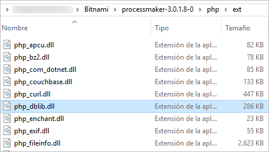
Self-Installer Installation:
Manual Installation:
3. Open the php.ini file located at:
Bitnami Installation:
Self-Installer Installation:
Manual Installation:
To enable the mssql extension, add the following line under the Windows Extensions section:
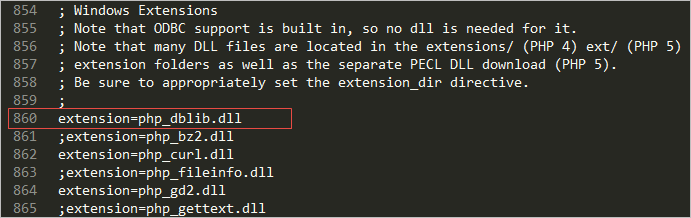
Next, restart the Apache server to use the new PHP configuration. This can be done in several ways:
-
Using the Microsoft Windows Services console:
Open a terminal (Start > All Programs > Accessories > Command Prompt) and type:services.msc The Services console will open. Search for the service processmakerApache and click on the Restart option.
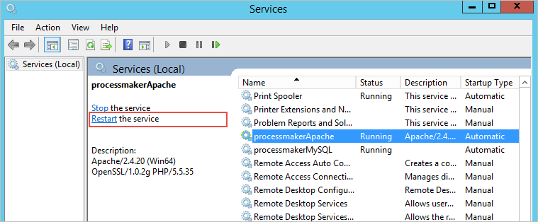
The Service Control will restart the Apache service.
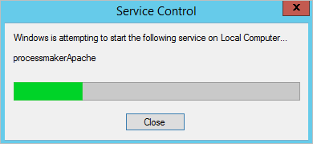
-
Using the Bitnami ProcessMaker Stack Manager Tool: (Only if ProcessMaker was installed with the Bitnami installer.)
Open the manager tool by going to Start > All Programs > Bitnami ProcessMaker and selecting Bitnami ProcessMaker Stack Manager Tool. Go to the Manage Servers tab, select "Apache Web Server" and click on the Restart button.
-
Using only the Command Prompt:
Open a command line (Start > All Programs > Accessories > Command Prompt) and go to the Apache directory inside the ProcessMaker folder. For a Bitnami Installation on the C: disk, the directory will be:cd c:\Bitnami\processmaker-3.x.x-0\apache2\bin\ The Apache service created during the ProcessMaker installation is named "processmakerApache". Execute the following command, which includes the name of the service, to restart the Apache service.
httpd -n processmakerApache -k restart
Finally, log into ProcessMaker and open a process. Go to Database Connections and click on the New link. The option Microsoft SQL Server should now be available under the Engine dropdown box.

Fill in the rest of the fields according to the instructions in the Creating a New Database Connection section.

Finally, click on the Test Connection option. If the configuration is correct, all marks will turn green in the Testing Server Connection dialog.
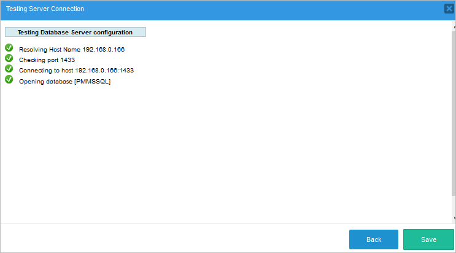
If a problem occurs, see the Possible Configuration Issues section.
Installing the SQLSRV Module
Available Version: As of ProcessMaker 3.3.0.
In case that the ProcessMaker instance uses PHP 7, instead of installing the mssql extension, install the sqlsrv extension.
Before installing the sqlsrv extension, check the following requirements:
- Verify the SQL Server version installed is compatible with the driver version package.
- Verify the Microsoft Drivers for PHP for SQL Server version is compatible with the ProcessMaker requirements including the PHP version and the Operating System version.
The following steps explain how to install the SQLSRV module on Windows Server Stacks:
After verifying the requirements mentioned above, link the proper driver package version here.
The link for the last driver package version 5.6 is here.
In the Microsoft Drivers 5.6 for PHP for SQL Server section, click Download.

An executable file (SQLSRV561.EXE) is downloaded. Run this file as the administrator.
The License Agreement screen displays. Click Yes to install the driver package.

In the next screen, browse the
extfolder where PHP was installed. Then click OK.
After the Driver Package files is extracted to the
extfolder, a confirmation message displays. Click OK.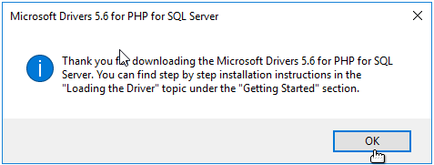
In the
extfolder, search for the proper extension for your PHP version. For example, for the version PHP 7.1, the compatible driver isphp_sqlsrv_71_ts_x64.dll. If the PHP construction is nts, then use the versionphp_sqlsrv_71_nts_x64.dll.Go to the folder where
php.iniis located and edit it. Add the following extension line selected in the previous step:extension = php_sqlsrv_71_ts_x64.dll Restart your web server, in this case restart Apache.
In the Command Prompt go to the folder where
php.exeis located, and run the following command to display the PHP information:c:\opt\php>php.exe -i> phpinfo.txt If there is a SQLSRV warning message, it means that the extension is located in a different folder or probably it is not compatible with your PHP version. Try downloading the proper extension version.
Possible Configuration Issues
Microsoft SQL Server Option is Missing
If for some reason the Microsoft SQL Server option does not appear in the list of database connections, verify that PHP is using the mssql extension. Log into ProcessMaker and select the Admin tab. Click the PHP Information option under Settings, and scroll down to the mssql extension section, which is usually between the myhash and mysql sections.
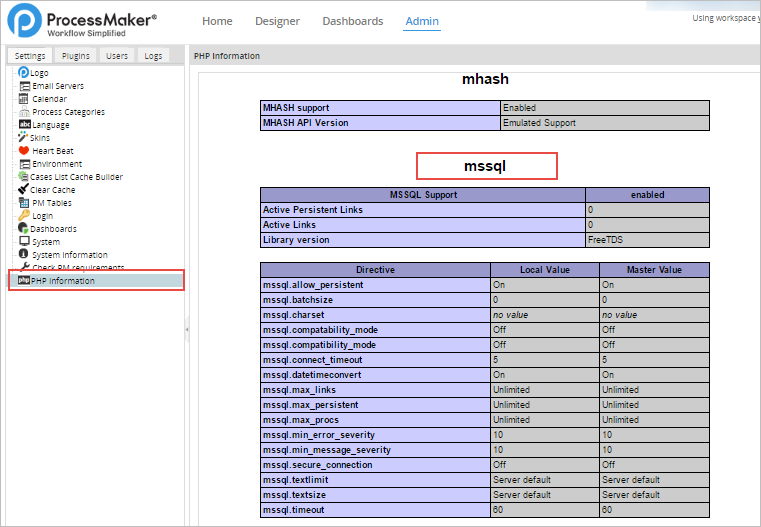
If the section is missing, restart the server system to apply the changes.
Destination Port Unreachable
If the Test Connection option is clicked, the following dialog will be displayed if the destination port is unreachable:
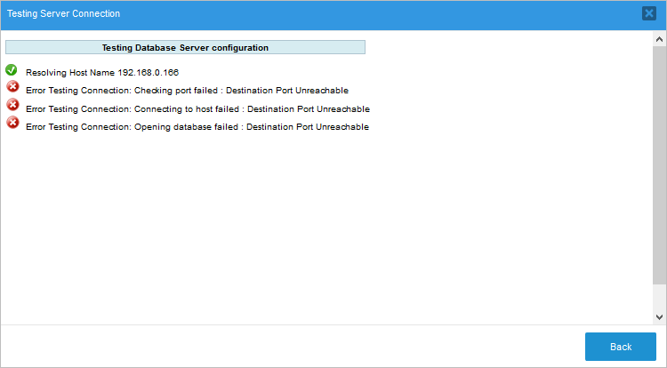
Verify that the MSSQL remote server is allowing remote connections. Open SQL Server Configuration Management, click on SQL Server Configuration Manager, go to Protocols for SQLExpress and make sure TCP/IP is enabled. The TCP/IP option allows other computers to connect with MSSQL through the IP. If not, right click on it and choose Enable.
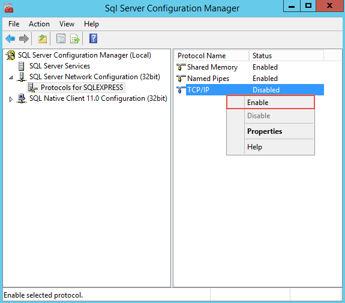
Check that the port is the correct one by right-clicking on TCP/IP and selecting Properties. In the TCP/IP Properties dialog, select the IP Addresses tab and scroll down to IPAII. Make sure the TCP Dynamic Ports field is blank and that TCP Port is set to 1433.
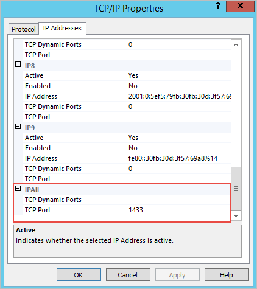
Lastly, ensure that the SQL Server is running in Network Service mode by going to SQL Server Services. Right-click on SQL Server and select Properties.
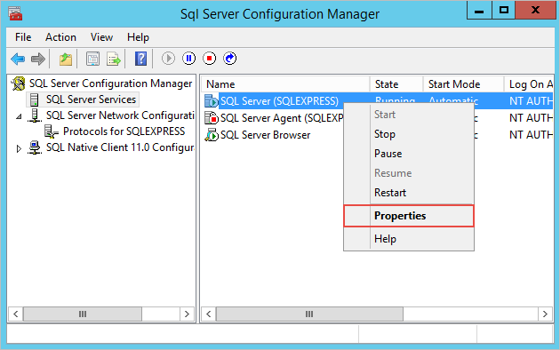
In the properties dialog, check that "Network Service" is selected in the Built in account option.
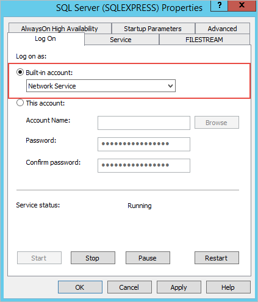
The changes won't take effect until the SQLExpress service is restarted.
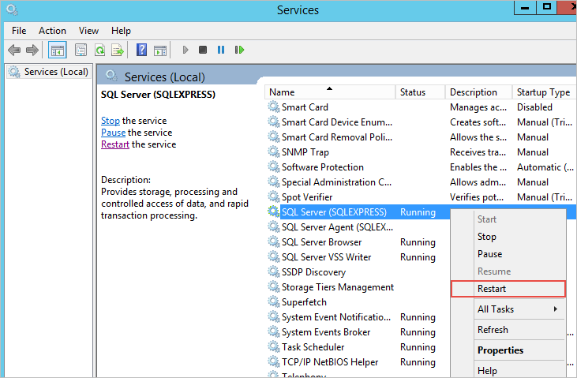
If there is still a problem, make sure the TCP port 1433 is not blocked by the firewall.
MS-SQL Connection Refused
If the Test Connection option is clicked, the following dialog is displayed if the MS-SQL connection is refused:
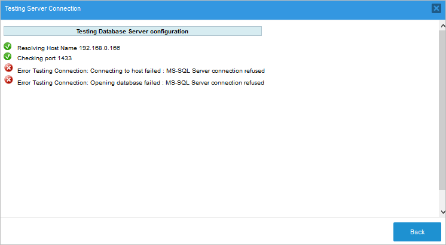
Notice that MSSQL has two methods of authentication: Windows Authentication and SQL Server Authentication. ProcessMaker uses the SQL Server Authentication method to establish a connection.
The user must choose the login method. To see the login method for a particular user, open the SQL Server Management Studio, right-click on Security, select Login and look for the user.
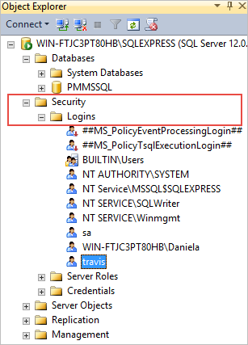
Right-click on the user and choose Properties. Verify that the credentials provided are the right ones in the Login Properties dialog.
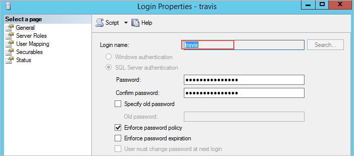
After that, check the user settings by going to Status. Verify that the Permission to connect to database engine option is "Grant" and Login is "Enabled".
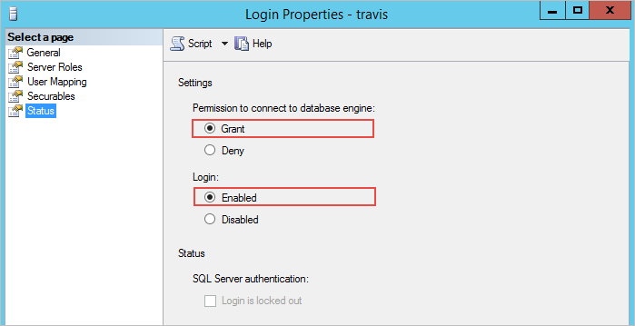
Database Does Not Exist
If the Test Connection option is clicked, the following dialog will be displayed if there is a problem connecting to the database:
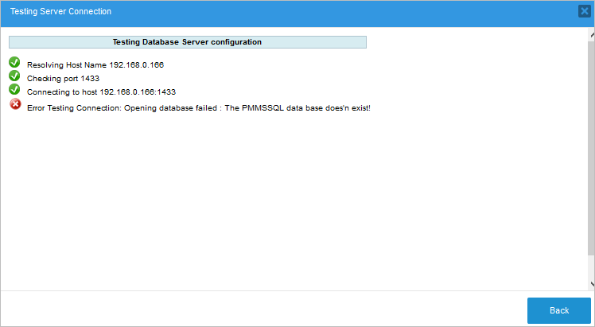
Verify that the user is the owner or has permission to access the database. To do this, open the SQL Server Management Studio, right-click on the database and choose Properties.
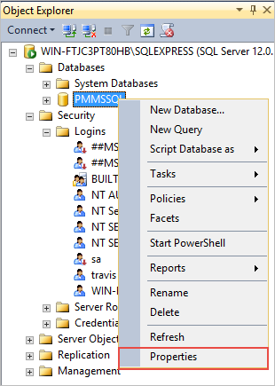
In the Database Properties dialog, check that the specified user is the owner of the database.
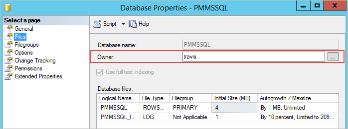
Unicode Support in MSSQL
ProcessMaker uses the UTF-8 (8 bit Unicode) character set, but Microsoft SQL Server 2008 and earlier only supported Unicode in the UCS-2 (little endian) character set and it must be stored in nvarchar or nchar fields. SQL Server 2012 added support for UTF-16 (little endian) character set. In order to query SQL Server from ProcessMaker, it is recommended that the text in SQL Server should be stored in nvarhar or nchar fields and stored as UCS-2 or UTF-16.
Linux/UNIX
ProcessMaker servers running on Linux/UNIX can access Microsoft SQL Server or Sybase databases by installing FreeTDS. Most distributions provide FreeTDS and a PHP extension for Microsoft SQL Server or Sybase. If your distribution doesn't provide a package for FreeTDS, see these instructions to compile FreeTDS from the source code.
Red Hat/CentOS/Fedora
Install FreeTDS and the php-mssql package using yum:
Then, edit the /etc/php.ini file and add the following line to enable the mssql extension:
For CentOS version 6.0 or later, follow the RHEL/Centos version 6.0 instructions
Ubuntu
For Ubuntu 16.04 or later, log in as root and install FreeTDS and the php5.6-sybase module using the following command:
Edit the php.ini file located in the /php/5.6/apache2/ directory.
Add the following line to enable the mssql extension.
Debian
For Debian 8 (Squeeze), log in as root, install FreeTDS and the php5.6-sybase package with the following command:
For Debian 5 (Lenny), install the freetds-common package instead:
SUSE/openSUSE
SUSE/openSUSE does not provide a PHP package for MS SQL Servers, so freeTDS and the mssql PHP extension will have to be compiled from the source code.
First, install the unixOBDC package and the tools for compiling:
Then, download the source code of the latest stable version of freeTDS. Decompress the code then configure and compile it:
Install the php5-devel package (which contains the phpize command):
Next, check which version of PHP you are using:
Then, download the source code for your version of PHP to a local directory. Decompress the code, switch to the ext/mssql directory and compile the mssql extension. Note that the following commands will only compile the mssql extension and insert it into your existing installation of PHP without altering anything else:
Then, configure PHP to use the new extension by editing the PHP configuration files:
In both files, add the line:
Finally, restart Apache to be able to use the new configuration. Microsoft SQL Server will be added to the list of database connections.
For older versions of Red Hat/CentOS that don't contain a php-mssql package, read these instructions to manually compile FreeTDS and PHP's mssql extension.
Executing stored procedures
To execute stored procedures on the Microsoft SQL Server database, edit the FreeTDS configuration file, which is generally found at /etc/freetds/freetds.conf.
Edit the following lines to include the IP address and server port where Microsoft SQL Server is installed and the TDS version number:
port = 1433
tds version = 7.0
Best Practices When Using Stored Procedures
These are examples of best ways to use stored procedures in MSSQL:
-
EXEC procedure-nameis allowed in the following controls: dropdowns or suggests. Here is an example with a dropdown control: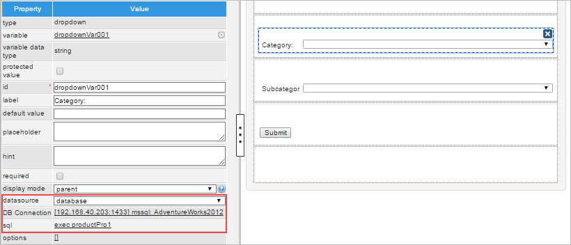
-
EXEC procedure-nameis also allowed in triggers. Here is an example filling a grid control with data:@=productsGrid = array();
$db = "71525495056005261835755079295218"; //Unique example ID of a database connection
$products = executeQuery("EXEC productPro2", $db);
if (is_array($products) and count($products) > 0) {
for ($i = 1; $i <= count($products); $i++) {
@=productsGrid[$i] = array(
"productID" => $products[$i]['productID'],
"productName" => $products[$i]['productName']
);
}
} -
EXEC procedure-name @VALUE = 'some-value'is not allowed because the sp_serveroption can not be used inside a ProcessMaker transaction. For example, using a trigger with the following code displays an error similar to the one on the image:$db = "71525495056005261835755079295218"; //Unique example ID of a database connection
$result = executeQuery("EXEC productPro2 @VALUE = 'Mixer'", $db);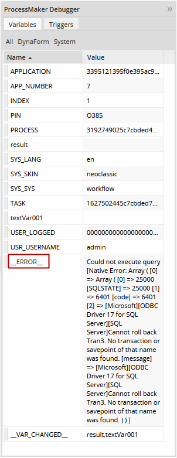
-
use database-name; EXEC procedure-name;is not allowed because the database name is already set on the database configuration. For example, using a trigger with the following code displays an error similar to the one on the image:$db = "71525495056005261835755079295218"; //Unique example ID of a database connection
$result = executeQuery("use sqlCustomConn; EXEC productPro2;, $db);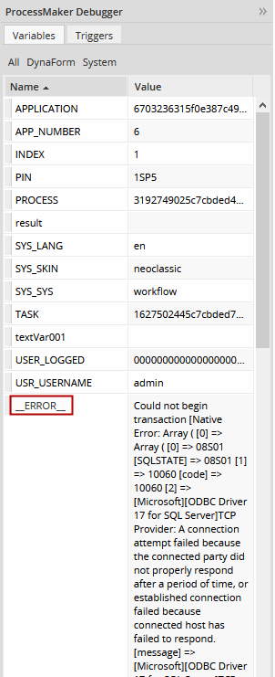
Installing the SQLSRV Module
Available Version: As of ProcessMaker 3.3.0.
In case that the ProcessMaker instance uses PHP 7, instead of installing the mssql extension, install the sqlsrv extension. The next steps explain how to install the SQLSRV module on CentOS specifically for Stack 225:
Install PHP 7.1
Warning: It is possible that you have conflicts with PHP versions previously installed, please delete prior versions and use the repositories of the official SQLSRV installation documentation.
sudo su wget https://dl.fedoraproject.org/pub/epel/epel-release-latest-7.noarch.rpm wget https://rpms.remirepo.net/enterprise/remi-release-7.rpm rpm -Uvh remi-release-7.rpm epel-release-latest-7.noarch.rpm yum install yum-utils yum-config-manager --enable remi-php71 yum update yum install php php-pdo php-xml php-pear php-devel re2c gcc-c++ gcc Install prerequisites
sudo su #Download appropriate package for the OS version curl https://packages.microsoft.com/config/rhel/7/prod.repo > /etc/yum.repos.d/mssql-release.repo exit sudo yum remove unixODBC-utf16 unixODBC-utf16-devel #to avoid conflicts sudo ACCEPT_EULA=Y yum install msodbcsql17 #optional: for bcp and sqlcmd sudo ACCEPT_EULA=Y yum install mssql-tools echo 'export PATH="$PATH:/opt/mssql-tools/bin"' >> ~/.bash_profile echo 'export PATH="$PATH:/opt/mssql-tools/bin"' >> ~/.bashrc source ~/.bashrc #optional: for unixODBC development headers sudo yum install unixODBC-devel Install devtoolset-7
sudo yum-config-manager --enable rhel-server-rhscl-7-rpms sudo yum install centos-release-scl sudo yum install devtoolset-7-gcc-c++ scl enable devtoolset-7 bash Install the PHP drivers for Microsoft SQL Server
sudo pecl install sqlsrv sudo pecl install pdo_sqlsrv sudo su echo extension=pdo_sqlsrv.so >> php --ini | grep "Scan for additional .ini files" | sed -e "s|.*:\s*||"/30-pdo_sqlsrv.ini echo extension=sqlsrv.so >> php --ini | grep "Scan for additional .ini files" | sed -e "s|.*:\s*||"/20-sqlsrv.ini exit View the installed
sqlsrvmodulephp --ri sqlsrv
If ProcessMaker is installed in an operating system other than CentOS, see System Requirements for the Microsoft Drivers for PHP for SQL Server and Download the Microsoft Drivers for PHP for SQL Server.
SQL Server Not Using UTF-8
Some issues might arise if the Microsoft SQL Server database does not use the UTF-8 character set and contains non-ASCII characters, because ProcessMaker is designed to use UTF-8.
- The source code of ProcessMaker is written in UTF-8, and produces UTF-8 HTML pages.
- The character set of the Apache server needs to be UTF-8.
- AJAX requests using JSON encode are in UTF-8.
- The collation in MySQL for ProcessMaker databases is in UTF-8.
These four components need to be in UTF-8 for everything to work: the source code, Apache server, interactive data and database fields.
Solving Issues with UTF-8 Characters
To display Unicode data from a Microsoft SQL Server database, it is recommended to:
- Setup freetds to send UTF-8 data to ProcessMaker.
- Remove some lines in the MSSQLResultSet.php file.
Setup FREETDS in Linux/UNIX
To avoid permissions problems with the freetds.conf file, it is recommended to give the freetds.conf file global read permissions. For example:
Make the environment variable FREETDSCONF point to the location of the freetds.conf file. At the beginning of the Apache service script (which is located at /etc/init.d/httpd in Red Hat/Cent OS/Fedora and at /etc/init.d/apache2 in Debian/Ubuntu/SuSE), add the following line:
Finally, in the global section of the freetds.conf file, change the following lines to:
client charset = UTF-8
Note: The TDS version may change depending on the version of the database engine with which the server is trying to communicate. For more information, please visit the freetds guide page.
Change MSSQLResultSet.php
Once freetds gets all the data in UTF-8, the code is no longer needed to convert all fields to UTF-8. Remove the lines 123-133 from the MSSQLResultSet.php file, which is located at:
- /thirdparty/creole/drivers/mssql/MSSQLResultSet.php
Collation Database Configuration
Usually, when trying to execute queries that contain the character ñ, an error will occur. If searching in fields, the result will be NULL.
The problem is that the database collation in ProcessMaker is configured with UTF-8. To make queries using ñ work, data must be converted from the character set used by the SQL Server database to UTF-8 using PHP's mb_convert_encoding() function. To convert from ISO-8859-1, which is the most commonly used character set in Windows, the utf8_encode() and utf8_decode() functions can be used.
For example, the following trigger code converts UTF-8 to ISO-8859-1 to send queries to an Microsoft SQL Server database and then it converts the search results from ISO-8859-1 to UTF-8, so the results can be displayed in a grid field in ProcessMaker:
$group = utf8_decode(@@SelectedGroup); //convert from UTF-8 to ISO-8859-1
$rows = executeQuery("SELECT FIRST_NAME + ' ' + LAST_NAME from TABLE_EMPLOYEES
where GROUP = '$group' and COMPANY in ('5','4','3','1')", $idMssql);
//place search results in a grid field named "EmployeesGrid" which has the rows firstName and lastName,
//which will be displayed in a subsequent DynaForm:
@=EmployeesGrid = array();
for ($i = 1; $i <= count($rows); $i++) {
//use utf8_encode() to convert from ISO-8859-1 to UTF-8:
@=EmployeesGrid[$i] = array(
'firstName' => utf8_encode($rows[$i]['FIRST_NAME']),
'lastName' => utf8_encode($rows[$i]['LAST_NAME'])
);
}